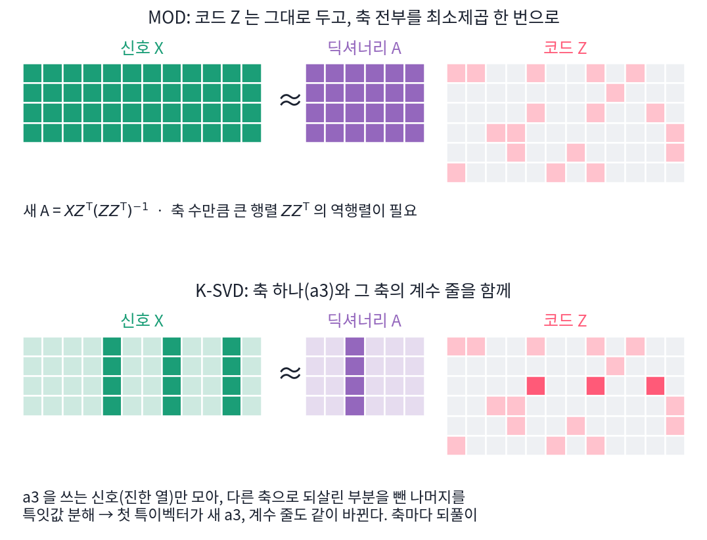
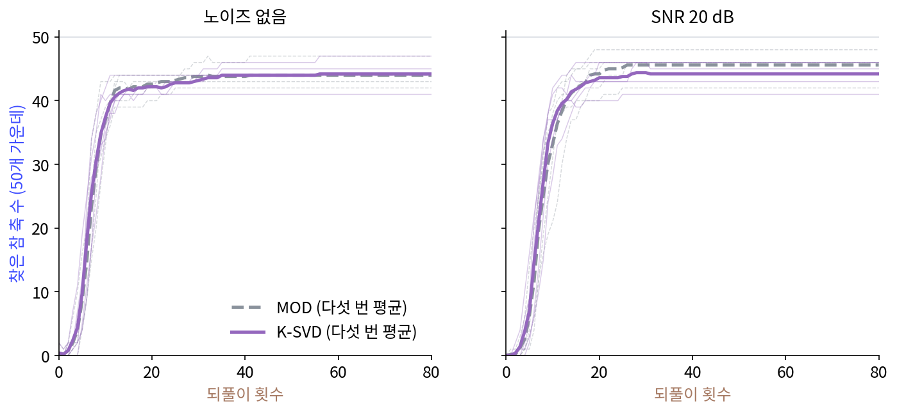
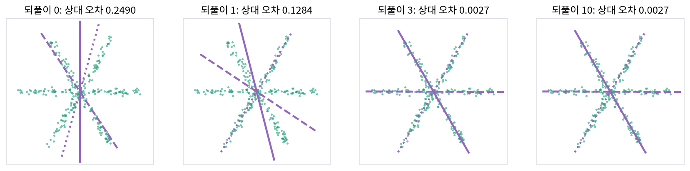
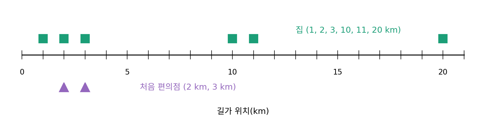
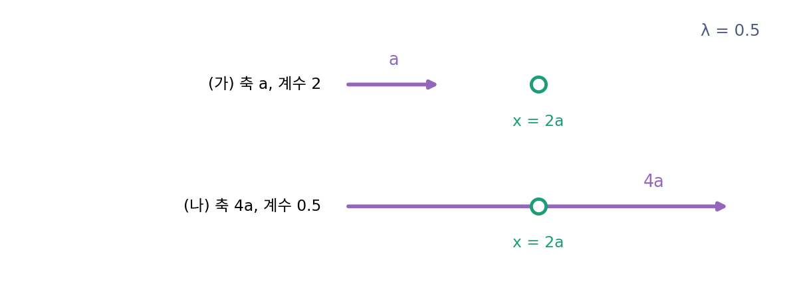
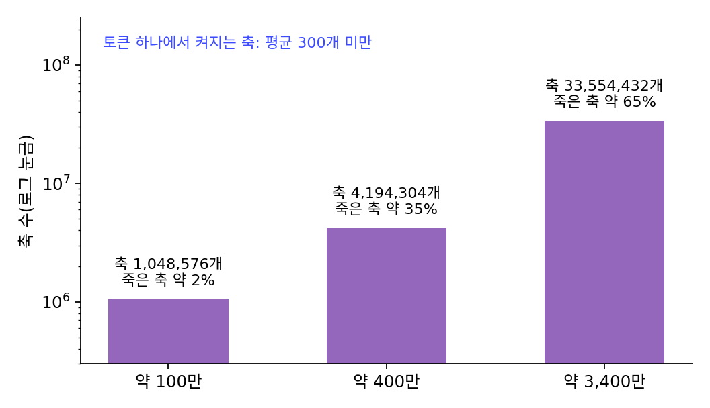

딕셔너리 러닝: 코드와 축을 번갈아 고치기
지금까지는 축을 우리가 정해 주었다. 별 모양에서는 세 직선의 방향을 알고 있었고, 네 칸 신호에서는 고른 축과 계단 축을 일부러 넣었다. 실제 자료에서는 그 직선들이 어느 방향인지 모른다. 주성분 분석은 축을 자료에서 고르지만 서로 직교하는 축을 차원 수 이하로만 고를 수 있어서, 별 모양에서는 어느 방향도 특별하지 않다고 보았다. 차원보다 많은 축을, 점마다 몇 개만 쓰는 축을, 자료에서 직접 찾을 수는 없을까?
역사: k-평균을 넓힌 K-SVD
자료에서 축을 배운다는 생각은 1996년 올스하우젠(Bruno Olshausen)과 필드(David Field)가 자연 사진 조각에서 시각 세포를 닮은 무늬를 배워 낸 일로 널리 알려졌다.
신호를 다루는 공학자들이 이 생각을 계산법으로 다듬은 것은 1990년대 끝 무렵이다. 엥간(Kjersti Engan)·오세(Sven Ole Aase)·후쇠위(John Håkon Husøy)는 1999년 「최적 방향법(method of optimal directions, MOD)」을 내놓았다. 정합 추구로 점마다 희소 코드를 구한 뒤, 그 코드를 고정하고 제곱 오차를 가장 작게 하는 딕셔너리 전체를 최소제곱 한 번으로 구한다. 코드를 열로 모은 행렬을 Z, 신호를 열로 모은 행렬을 X라 하면 새 딕셔너리는 XZᵀ(ZZᵀ)⁻¹이다.
아론(Michal Aharon)·엘라드(Michael Elad)·브룩스타인(Alfred Bruckstein)은 2006년 논문에서 MOD의 모자란 점 둘을 꼽았다. 축 수만큼 큰 정사각 행렬 ZZᵀ의 역행렬을 구해야 해서 축이 아주 많으면 쓰기 어렵고, 축을 모두 고치는 동안 코드는 옛 값 그대로여서 수렴이 느리다는 것이다. 그들이 본뜬 것은 점들을 가까운 것끼리 k개의 클러스터로 나누는 k-평균 클러스터링이다. 점마다 축 하나만 계수 1로 쓰게 하면 희소 코딩이 곧 k-평균이 된다. 그래서 축을 하나씩 고치기로 했다. 축 하나를 고칠 때는 그 축을 쓰는 점들만 모아, 다른 축들로 되살린 부분을 빼고 남은 것을 특잇값 분해한다. 가장 큰 특잇값의 특이벡터가 새 축이 되고, 그 축의 계수도 이때 함께 바뀐다. k-평균이 평균으로 대표점을 고치듯 특잇값 분해(SVD)로 축을 하나씩 고친다고 해서 이름을 K-SVD로 지었다. 희소 코드를 구하는 방법은 정합 추구든 기저 추구든 아무것이나 끼울 수 있게 했다.

논문은 답을 아는 문제로 시험했다. 20차원 축 50개를 무작위로 만들고, 그 가운데 셋을 섞은 신호 1500개를 만든 뒤, 80번 되풀이해 처음 축을 몇 개나 되찾는지 셌다. 배운 축 하나가 참 축과 거의 겹치면(1 − |a·â| < 0.01) 찾은 것으로 쳤다. 같은 크기로 작게 흉내 내 보면(씨앗 0~4 다섯 번) 두 방법 모두 50개 가운데 평균 44~46개에서 멈추고, 이 설정에서는 둘의 차이가 작다. 남은 몇 개는 되풀이를 늘려도 찾지 못한다. 번갈아 고치기가 가장 좋은 답에 닿는다는 보장이 없다는 점은 아래 별 모양에서 다시 본다.


MOD는 최소제곱 한 번이면 딕셔너리 전체가 나오는데, 그게 왜 모자란 점이에요? 역행렬 하나쯤이야.

ZZᵀ가 몇 칸짜리 행렬이죠? 언어 모델에서 쓴 3,400만 축으로 따져 볼까요.

축 수 × 축 수니까… 3,355만의 제곱이면 10¹⁵칸이 넘어요. 메모리에 올릴 수도 없네요.

그래도 축이 50개면 문제없잖아요. 논문의 시험도 50개였고요.
그래서 아론·엘라드·브룩스타인은 둘째 이유도 꼽았어요. 축을 다 고치는 동안 코드는 옛 값 그대로라 느리다는 것이죠. 그리고 어느 방법이든 번갈아 고치기가 가장 좋은 딕셔너리에 닿는다는 보장은 없었어요.

k-평균도 처음 대표점에 따라 다른 곳에서 멈추잖아요. 별 모양에서 세 직선의 방향을 모르고 시작하면, 번갈아 고치기가 세 직선을 찾아낼까요?
별 모양에서 축 셋을 찾기
별 모양 자료에 작은 노이즈(표준편차 0.03)를 섞고(씨앗 1), 세 직선의 방향을 모른다고 하자. 축 셋을 아무렇게나 정하고(처음 축을 고르는 무작위 씨앗은 7) 시작해서 두 단계를 번갈아 한다(계산은 sources/sparse-coding/s4_dict.py). 가장 단순한 판으로, 점마다 축 하나만 쓰게 한다.
- 코드 고치기: 축을 고정하고, 점마다 |a·x|가 가장 큰 축 하나를 골라 그 내적을 계수로 삼는다.
- 축 고치기: 코드를 고정하고, 축마다 그 축을 고른 점들에 가장 잘 맞는 원점을 지나는 직선의 방향으로 축을 옮긴다. 그 점들만으로 구한 첫 주성분 축이다.
처음 축은 74.5°, 90.1°, 123.3°였고, 세 직선 가운데 가장 많이 어긋난 것은 29.9°였다. 상대 제곱 오차는 0.249다. 한 번 고치면 0.128, 두 번 고치면 0.0027이 되고, 축은 59.8°, 119.7°, 179.2°로 세 직선과 0.75° 안에서 맞는다. 셋째 번부터는 0.24° 안에서 멈추는데, 이때의 오차 0.0027은 참 직선 셋을 축으로 썼을 때의 오차와 같아서 직선에서 벗어난 노이즈만 남은 것이다.

이렇게 점마다의 희소 코드와 딕셔너리를 함께 찾는 일을 딕셔너리 러닝 (자료에서 넘치는 축을 배우기, dictionary learning)이라 한다. 점마다 축 하나 대신 L1 페널티를 쓰면 목적은 아래와 같다.
A를 고정하면 점마다 라쏘(ISTA로 푼다)이고, z를 고정하면 A에 대한 최소제곱이다. 둘 다 혼자서는 잘 풀리는 문제다. 하지만 둘을 함께 보면 목적이 볼록하지 않아서, 번갈아 고치기가 가장 좋은 답에 닿는다는 보장은 없다. 처음 축을 고르는 씨앗을 0에서 19까지 바꿔 20번 해 보면 19번은 세 직선을 모두 3° 안으로 찾았지만, 씨앗 14에서는 축이 27.0°, 117.0°, 121.7°에서 멈췄다(상대 오차 0.156). 117.0°와 121.7°의 두 축이 120° 직선을 나눠 맡고, 27.0° 축 하나가 0°와 60° 두 직선의 점 190개를 함께 맡은 채로 더는 바뀌지 않는 상태에 갇힌 것이다.
축 수를 바꿔서 축을 둘만 두면 직선 하나를 맡을 축이 없어 오차가 0.176에 머문다. 축을 넷 두면(씨앗 7) 셋은 세 직선을 찾고, 남은 하나는 120° 직선 위에서 116.1°와 121.1°로 그 직선의 점들을 나눠 맡는다. 오차는 0.0022로 축 셋일 때보다 조금 더 줄었다. 노이즈 때문에 직선 둘레로 조금씩 퍼진 점들을, 방향이 조금 다른 두 축이 나눠 맡아 남은 오차를 줄인 것이다.
ML에서: 언어 모델 안의 딕셔너리
중첩 가설이 맞다면, 언어 모델의 뉴런 값은 뉴런 수보다 많은 「특징」의 방향을 희소하게 섞은 것이다. 그렇다면 뉴런 값을 많이 모아 딕셔너리 러닝을 하면 특징의 방향을 꺼낼 수 있을 것이다. 브리켄(Trenton Bricken) 외의 「단의성을 향하여: 딕셔너리 러닝으로 언어 모델 쪼개기(Towards Monosemanticity: Decomposing Language Models With Dictionary Learning)」(2023)는 이것을 희소 오토인코더로 했다. 인코더가 ReLU(Wx + b)로 코드를 내고, 디코더의 행렬이 딕셔너리 노릇을 하며, 손실은 되살린 것의 제곱 오차에 코드의 L1 페널티를 더한 것이다. 인코더 한 층이 ISTA 한 스텝의 꼴이고 디코더가 딕셔너리이니, 이 장의 딕셔너리 러닝에서 코드 고치기를 인코더 한 층으로, 딕셔너리를 디코더 행렬로 바꿔 신경망으로 학습시킨 것이다. 그들은 MLP 층(행렬 곱 뒤에 활성화 함수를 씌우는 완전 연결 층)의 뉴런이 512개인 층 하나짜리 트랜스포머에서 그 층의 값(512칸짜리 벡터)을 80억 개 모아, 축이 512개에서 131,072개까지인 희소 오토인코더들을 학습시켰다. 「뉴런 512개가 수만 개의 특징을 나타낼 수 있다」고 적었고, 딕셔너리를 키우면 한 특징이 더 잘게 나뉘는 것(특징 쪼개짐)도 보고했다. 별 모양에서 축을 넷 두자 한 직선을 두 축이 나눠 맡은 것과 닮은 현상이다.
템플턴(Adly Templeton) 외의 「단의성 넓히기(Scaling Monosemanticity)」(2024)는 같은 방법을 큰 모델 클로드 3 소네트의 가운데 층으로 넓혔다. 축 수가 약 100만, 400만, 3,400만 개인 희소 오토인코더 셋을 학습시켰고, 셋 모두 토큰 하나에서 0이 아닌 축은 평균 300개보다 적었다. 금문교를 말하는 글에 반응하는 특징처럼 사람이 이름 붙일 수 있는 특징을 많이 찾았다고 보고했다. 다만 학습이 끝났을 때 어떤 토큰에서도 켜지지 않는 「죽은」 축이 100만 개짜리에서 약 2%, 3,400만 개짜리에서 약 65%였다. 특징에 붙인 이름이 그 방향이 모델 안에서 하는 일을 얼마나 다 설명하는지는 논문들이 스스로도 열어 둔 물음이다.
문제 10. 편의점 두 곳의 자리
한 길가의 1, 2, 3, 10, 11, 20 km 자리에 있는 집 여섯 채를 위해 편의점 두 곳의 자리를 정하려 한다. 집마다 가까운 편의점을 쓰고, 「집에서 편의점까지 거리의 제곱」의 합을 줄이고 싶다. 처음 편의점 자리를 2 km, 3 km로 두고 (가) 집마다 가까운 편의점을 정한다 (나) 편의점을 맡은 집들의 평균 자리로 옮긴다를 되풀이하면 어떻게 되는가?

처음엔 1, 2 km 집이 2 km 편의점, 나머지 넷이 3 km 편의점이에요. 거리 제곱합이 403이요. 평균으로 옮기면 1.5 km와 11 km예요.
다시 집을 나눠 봐요.
이번엔 3 km 집이 1.5 km 쪽으로 가서 (1, 2, 3)과 (10, 11, 20)이요. 제곱합 84.75. 옮기면 2 km와 13.67 km, 제곱합 62.67이고, 그다음엔 나뉘는 게 안 바뀌어서 멈춰요.
처음 자리를 1 km, 20 km로 해도 4 km와 15.5 km를 거쳐 같은 2 km, 13.67 km에 닿아. 거리 제곱합은 되풀이할 때마다 줄어들기만 하고.

어, 이거 별 모양에서 축 셋을 찾던 번갈아 고치기랑 같네요. 집을 편의점에 맡기는 게 점마다 축을 고르는 거고, 편의점을 옮기는 게 축을 옮기는 거예요.

그래요. 이 되풀이가 k-평균 클러스터링이에요. K-SVD가 k-평균을 넓힌 것이라는 말이 그 뜻이에요. 점마다 축을 하나만 쓰게 하면, 「가까운 편의점 고르기」가 「내적이 가장 큰 축 고르기」로, 「평균 자리로 옮기기」가 「맡은 점들의 첫 주성분 축으로 옮기기」로 바뀔 뿐이에요.

조별 과제에서 조원을 먼저 나누고, 조마다 회의 시간을 다시 맞추고, 그 시간에 안 맞는 사람은 다른 조로 옮기는 거랑 비슷해요.
문제 11. 축의 길이를 묶지 않으면
딕셔너리 러닝의 목적에서 「축은 길이 1」이라는 묶음을 뺐다고 하자. 점 x = 2a(a는 길이 1인 축 하나)를 λ = 0.5로 적는다. (가) 축 a와 계수 2로 적을 때 맞추기 항과 페널티는? (나) 축을 4a로 늘리고 계수를 0.5로 하면? (다) 이 묶음 없이 번갈아 고치기를 하면 어떤 일이 생기는가?

(가)는 꼭 맞으니까 맞추기 항 0, 페널티 0.5 × 2 = 1이에요. (나)도 4a × 0.5 = 2a라서 맞추기 항 0이고 페널티 0.5 × 0.5 = 0.25예요. 페널티가 4분의 1이 됐어요.
그러면 학습은 무엇을 하고 싶어 할까요?
축을 100a로 늘리면 계수 0.02, 페널티 0.01.
더 늘리면요?

축을 한없이 늘리고 계수를 한없이 줄이면 페널티가 0으로 가요. 되살린 것은 그대로인데요. L1 페널티가 아무것도 벌주지 못하게 돼요.

그럼 계수가 다 작아질 뿐이고 0이 되는 건 아니네요. 희소하게 만들려던 페널티가 계수를 0으로 만드는 대신 축 길이를 늘리는 데로 새 버렸어요.

그래서 축의 길이를 1로 묶거나, 매번 고친 뒤 길이 1로 다시 맞춰요. 브리켄 외의 희소 오토인코더도 디코더의 열(축)을 길이 1로 묶었어요.

선형대수에서 고유벡터는 길이를 정해 줘야 하나로 정해졌는데, 여기도 축의 크기와 계수의 크기가 서로 넘겨줄 수 있어서 한쪽을 묶어야 하는 거네요.
문제 12. 3,400만 개의 축, 그 가운데 몇 개가 일하나
템플턴 외(2024)의 희소 오토인코더는 축이 1,048,576개, 4,194,304개, 33,554,432개였고, 학습 뒤 죽은 축의 비율이 각각 약 2%, 35%, 65%였다. 토큰 하나에서 켜지는 축은 평균 300개보다 적었다. (가) 셋의 살아 있는 축은 각각 약 몇 개인가? (나) 가장 큰 것에서 토큰 하나가 켜는 축 300개는 살아 있는 축의 몇 %인가? (다) 토큰 하나의 코드를 (축 번호, 값) 300쌍으로 적는다면, 축 번호 하나에 몇 비트가 드는가?

(가)는 곱하면 약 103만, 273만, 1,174만 개요. 축을 8배로 늘렸는데 살아 있는 건 4배 남짓밖에 안 늘었어요.
(나)는요?
300 ÷ 1,174만 = 0.0026%예요. 엄청 희소하네요.
(다)는 축 번호가 3,355만 가지라서 log₂ 33,554,432 = 25비트야. 근데 살아 있는 축만 번호를 매기면 log₂ 1,174만 ≈ 23.5비트로 줄어. 죽은 축은 번호 공간만 차지하고 코드를 길게 만들어.
별 모양에서 축을 넷 둔 것과 견줘 볼까요? 그때 남은 축은 어떻게 됐죠?
남은 축은 죽지 않고 한 직선을 다른 축과 나눠 맡았어요. 오차도 조금 줄었고요. 축을 늘리면 쪼개지기도 하고, 아무 일도 안 맡은 채 죽기도 하는 거네요.
동아리 단톡방 인원이 3천 명인데 실제로 말하는 사람은 몇십 명인 거랑 같아요. 방을 키운다고 말하는 사람이 그만큼 느는 건 아니더라고요.